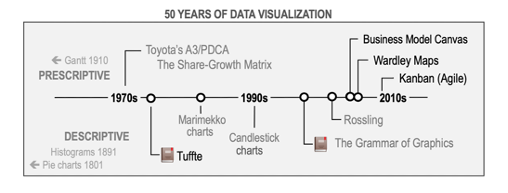

1 Introduction
Data visualization is the graphical display of abstract information to help us make sense of phenomena and to communicate these findings. It is a powerful tool to help us uncover and share the stories of our data. Visualizations help us retain and analyze all the information in our data, uncover and share our insights, and describe our research in a useful way. If a picture is worth a thousand words, then a good data visualization is worth millions.
But, how many of us have ever taken a course explicitly on data visualization? It’s typically not taught in standard data analysis courses, yet it is a mainstay for nearly every sector in today’s data-driven world. Today we’ll dive into the what, how, and why of data visualization and describe some best practices that you can immediately implement into your research workflows. Along the way we’ll also focus on building up our collective data literacy skills, and employ critical approaches to produce science that is more robust, transparent, and equitable.
1.1 A Brief History of Data Visualization
Data visualization is not a modern invention. Quantitative information display has been traced back to prehistory with the locations of stars mapped on the Lasaux cave drawings. Clay tokens, quipu, and stick charts dating back as far as 5500 BC also illustrate our long history of creating shared representations of data. The oldest known data visualization dates to 1160 BC with the Turin Papyrus Map, which accurately illustrates the distribution of geological resources in a region in Egypt. These earliest forms of data visualization served purposes of navigating culture and living within society - from accounting to agriculture, transportation, religion, and medicine. It was used to help us explore and understand natural phenomena and the workings of the universe.
{kind=link}
{kind=link}
{kind=link}
{kind=link}
The French philosopher Rene Descartes is attributed as developing the precursor to today’s modern plot in the 17th century - a two-dimensional coordinate system for displaying values. Later in the 18th century William Playfair began creating left to right oriented plots, allowing the viewer to explore how values change over time. He’s also attributed to inventing the bar graph and, unfortunately, the pie chart (we’ll get to why that’s unfortunate, later). For a more complete history of data visualization, check out the chapter by M. Friendly on “Milestones in the history of thematic cartography, statistical graphics, and data visualization”.
Unsurprisingly, the invention of tools like paper and computers have played a strong role in how we collect, analyze and store data as well as share and communicate it. These tools have also shaped our relationship with knowledge and information, and not always for the better - which we’ll touch upon briefly at the end. Today’s workshop is designed to be tool-agnostic, so you can apply these tips and theory to improve your data visualization regardless of the software you’re using.